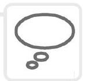

Chapter 6: Anti-inflammatory drugs
Learning objectives
After studying this chapter you should be able to:
- Describe acute and chronic inflammatory processes.
- Explain the mode of action of non-steroidal anti-inflammatory agents.
- Demonstrate an understanding of what is meant by cyclo-oxygenase pathway 2 inhibitors.
- Discuss the mode of action and adverse effects of aspirin.
- Define what is meant by the word 'histamine'.
- Describe the mode of action of antihistamine medication.
- Demonstrate an understanding of why steroid drugs are given, their routes of administration and side-effects.
- Explain what information the practitioner should give to a patient taking systemic steroid therapy.
- Define the condition rheumatoid arthritis.
- List three drugs that would be categorized as disease modifying antirheumatoid drugs.
- Correctly solve a number of drug calculations with regard to anti-inflammatory drugs.
Introduction
Inflammation is the body's response mechanism to cellular damage. Without the inflammatory response our bodies could not survive. Therefore, inflammation is a protective mechanism designed to rid the body of the cause of injury and prepare our tissues to rebuild themselves following injury.
The inflammatory response (see Figure 6.1) is a local reaction that involves release of antibacterial substances that defend the body from attack. The inflammatory process walls off the injured area so that toxins cannot affect the whole system. Finally, it puts in place the infrastructure that enables the body to heal itself and be restored to its normal functioning. In many ways, inflammation could be described as a homeostatic mechanism. The major signs and symptoms of inflammation are redness, pain, swelling, heat and loss of function. These are brought about by chemicals liberated by plasma proteins and cells. The plasma proteins and various white cells squeeze through the walls of capillary vessels and gain access to the site of tissue damage, infection or foreign body. This response is brought about by a variety of chemicals in the body which open up blood vessels (vasodilation) and act as messengers to summon white blood cells to the appropriate location. This messaging system is referred to as chemotaxis.
Inflammation can be classified as either acute or chronic. Both types will now be described.
Acute inflammation
An example of this would be an insect bite. The nature of acute inflammation is characterized by its rapid onset and short duration. This response is intended to remove debris from the tissue, such as micro-organisms and other particles of dead tissue. At the same time, the body sends messages to the bone marrow, which trigger a greater manufacture of phagocytic cells, particularly neutrophils, which have the ability to digest invading organisms. Finally, other chemical messengers summon these phagocytic cells from the area of damage by the process of chemotaxis.
One of the first chemicals to be released in the acute inflammatory response is called histamine. This is released from a type of body cell called a mast cell. The role of histamine in the body is to produce vasodilation and increase the permeability of blood vessels. This in turn allows fluid and phagocytic cells to move from the intravascular fluid to the extravascular. The whole area of damage becomes flooded with fluid, plasma proteins and phagocytic cells. This fluid is called acute inflammatory exudate and its presence is detected by looking for the cardinal signs of inflammation discussed earlier.
The action of flooding the tissues with fluid and plasma proteins is important as it dilutes any toxins which may have been released, especially by bacteria. The excess fluid is drained away by a network of blind capillary-type vessels, which belong to the lymphatic system. This is important as small amounts of bacterial protein are exposed to lymphocytes which, in turn, produce antitoxins, which we call immunoglobulins. These are attracted to the area of cell injury to neutralize toxins further. A specific group of plasma proteins called the complement group assist the inflammatory response by attracting white cells by chemotaxis and promoting the amount of phagocytic cells made available to the body.
First into the battle zone are a group of granular leucocytes called neutrophils. These cells ingest small portions of dead tissue. They can do this as the cell contains packages of an enzyme that breaks down the bacterial walls. This is known as lysozyme. These packages release their contents and dissolve the debris. Neutrophil activity is limited, however, because they do not have the ability to make and store more of this enzyme. Therefore, once the neutrophil has used up all of its enzymes and phagocytosis is complete, the cell degenerates and dies.
Next into the arena of conflict come two types of agranular white blood cells - the monocytes and the lymphocytes. Once the monocyte enters the damaged area it undergoes a change in its structure, becoming a more specialist type of white cell known as a macrophage. These cells can mop up any cell debris or bacteria. Unlike neutrophils, they can replenish and package more lysozyme. Therefore, they can sustain the campaign against the invading force. Their allies, the lymphocytes, are part of a more specific immune response and will have been alerted by removal of cellular materials via the lymphatic system. Specific cells will now have been created by the body to counteract these foreign proteins, which are called antigens. Two types of lymphocyte will have been created by the body: 'T' lymphocytes which naturally attack any foreign antigens, and 'B' lymphocytes which produce the immunoglobulins mentioned earlier which neutralize any toxins produced by the invading bacteria.
Once the area has been cleared, repair can take place. Cells that rebuild tissue, called fibroblasts, now start to proliferate and generate collagen, a protein necessary for wound repair. Also, a process known as angiogenesis can take place and blood vessels that have been destroyed in the damaged area start to grow again, supplying nutrients and oxygen to the newly forming tissues.
Acute inflammation can be seen as almost a balance between the amount of damage caused by the invading organisms and the damage caused by the body's response in terms of trying to safeguard surrounding normal tissue. The inflammatory process itself will almost inevitably cause some damage to tissues by its efforts to save other tissues. This balancing act, therefore, has three possible end points:
- Resolution. Here there is complete healing and tissue repair.
- Healing by repair. Here the tissue is completely destroyed and now lacks the ability to regenerate. As a result, the tissue will be repaired by scar tissue. This tissue is fibrous in nature and lacks the specialization of the surrounding tissue.
- Chronic inflammation. This is brought about when the noxious material persists over an extended period of time, resulting in the continued destruction of tissue.
Chronic inflammation
As stated earlier, this usually arises when a noxious substance is not removed by the acute inflammatory process. There are times when chronic inflammation is not preceded by the acute inflammatory process. This is often the case in what are termed autoimmune diseases, where the body's defence mechanisms appear to be turned on themselves. Inflammation and destruction of normal body tissue by autoimmunoglobulins takes place. For some reason, the body is detecting some of its own tissue as foreign.
If the acute inflammatory phase cannot remove the foreign material, further tissue destruction takes place as the initial agent and the inflammatory response continue to battle it out. The body does make attempts to repair the damage, however, due to the continued battle between destruction and repair its efforts are hampered.
In chronic inflammation, the cells that are found at the site of injury differ from those for acute inflammation. The body is mounting a more specific defence and this is mirrored in the type of white cell found in the inflamed area. Rather than lots of neutrophils and macrophages being present, there are now large amounts of lymphocytes. Attempts to repair the tissues are now evident as fibrosis as a result of thick bands of collagen fibres being laid down in a desperate attempt to heal the site of injury. In order for natural resolution to occur, the patient may need help via antibiotic therapy, having the foreign body removed or having nutritional support.
In order to understand the pharmacological action of certain anti-inflammatory drugs, we must probe deeper into physiology and focus our attention on a group of substances called eicosanoids. These include prostacyclin and thromboxane (which you will come across again in Chapter 7 on anticoagulants), and prostaglandins and leukotrienes. These agents are very important in triggering the inflammatory response and are formed when a fatty acid called arachidonic acid is liberated from a damaged cell membrane by action of an enzyme known as phospholipase.
The arachidonic acid acts by triggering two vitally important pathways, the cyclo-oxygenase pathway and lipoxygenase pathway. The cyclo-oxygenase pathway produces prostaglandins (see Figure 6.2), whereas the lipoxygenase pathway leads to leukotriene formation. We will see in our exploration of anti-inflammatory drugs that some act on one pathway while others exert their effects on both.
Non-steroidal anti-inflammatory drugs
NSAIDs are a large and popular group of therapeutic agents. Their main use is as an analgesic to treat mild to moderate pain (see Chapter 4). Examples include ibuprofen, aspirin, naproxen and paracetamol. They are frequently prescribed for orthopaedic complaints, such as osteoarthritis and other musculoskeletal conditions. They are also a very popular OTC medication for minor aches and pains.
This group of drugs works by inhibiting the formation of prostaglandins. Prostaglandins are naturally occurring substances and are released when cell membranes are damaged in some way. They are responsible for dilation of vessels, causing redness and swelling. Some of them also sensitize the receptors that are responsible for us feeling the sensation of pain (see Chapter 4).
Let us now return to our discussion concerning the cyclo-oxygenase pathway. We have more than one cyclo-oxygenase system. Some researchers claim that there are as many as three. Cyclo-oxygenase pathways in most pharmacological texts are denoted by the prefix COX followed by the number of the pathway (e.g. COX1). The prostaglandins derived from COX1 are to do with the smooth running of body systems; in particular they help to maintain the protective mucous lining of the stomach and intestine. COX2 in comparison produces prostaglandins that facilitate pain and inflammation.
The vast number of current NSAIDs block both pathways. This is problematic as the drugs reduce the pain and inflammation associated with COX2 but also reduce the homeostatic function of COX1. This leads to a number of GI problems, the most significant of which is peptic ulceration. Often, oral administration of a prostaglandin substitute, such as misoprostol, may be used. This helps to ensure limited damage to the stomach mucosa. Also, some doctors will prescribe a drug known as a proton pump inhibitor which limits the amount of acid secretion by cells in the stomach wall. This in turn limits the risk of peptic ulcers forming. An example of a proton pump inhibitor would be omeprazole.
Another common side-effect of these drugs is the adverse reaction they can have on kidney function. Some prostaglandins in the COX1 pathway have an effect on the pressure of blood flow through the kidneys. As our kidneys need pressure in order to filter our blood, any drug that affects this fine balance can be potentially detrimental.
NSAIDs may also increase the risk of heart attacks, stroke and related conditions, which can be fatal. This risk may increase with duration of use and in patients who have underlying risk factors for heart and blood vessel conditions. NSAIDs should not be used for the treatment of pain resulting from coronary artery bypass graft surgery. They can cause an increased risk of serious, even fatal, stomach and intestinal adverse reactions such as bleeding, ulcers and perforation of the stomach or intestines. These events can occur at any time during treatment and without warning symptoms. Elderly patients are at greater risk for these types of reaction.
In the introduction to this chapter we described the chemicals that cause inflammation. NSAIDs reduce this inflammatory response by dampening down processes such as vasodilation, the formation of oedema as vessels become more permeable and, finally, pain. It is thought that this class of drug interferes with COX2 but has the disadvantage of interfering with COX1.
Naproxen
This is a commonly used NSAID in the reduction of pain, fever, inflammation and stiffness associated with conditions such as arthritis and ankylosing spondylitis (a chronic arthritis of the spine). Naproxen is often one of the first choices when treating an inflammatory condition because it is very effective with relatively few side-effects. However, ibuprofen is still the safest (see Chapter 4).
The dose of naproxen will vary depending on the condition it is being used to treat. However, the usual adult dose is 250-500 mg twice daily. Because of potential effects on the gastric lining a drug such as misoprostol may also be used.
Naproxen is associated with several suspected or probable interactions that affect the action of other drugs. For example, it may increase the blood levels of lithium by reducing the excretion of lithium by the kidneys. Increased levels of lithium may lead to lithium toxicity. Naproxen may reduce the blood pressure-lowering effects of blood pressure medication because prostaglandins play a role in the regulation of blood pressure.
When naproxen is used in combination with methotrexate or aminoglycosides (e.g. gentamicin) the blood levels of the methotrexate or aminoglycoside may increase, presumably because the elimination from the body is reduced. This can lead to more methotrexate or aminogly-coside-related side-effects. Individuals taking oral blood thinners or anticoagulants, for example, warfarin, should avoid naproxen because it also thins the blood, and excessive blood thinning may lead to bleeding.
There are no adequate studies of naproxen in pregnant women. Therefore, it is not recommended during pregnancy, even though the concentration of naproxen in breast milk is very low and therefore breastfeeding while taking this drug is probably not harmful to the infant.
Cyclo-oxygenase pathway 2 inhibitors
It would appear from our description of COX1 as good prostaglandin formation and COX2 as bad prostaglandin formation that an obvious solution to the problem would be to come up with a group of drugs that first inhibited the COX2 pathway. Indeed, this is what has happened. This search for COX2 specific drugs resulted in a number of early forerunners - valdecoxib, celecoxib and rofecoxib. However, in 2004 rofecoxib (VIOXX) was withdrawn voluntarily from the market due to studies which suggested that it increased the risk of myocardial infarction and stroke. These side-effects are linked to prostaglandin inhibition.
Certain prostaglandins are important for the balance in our bodies that allows our blood to clot (see Chapter 7). This fine balance is upset in a number of people, leading to increased risk of thrombosis. Hence, valdecoxib was also withdrawn voluntarily from the market in April 2005 because of concerns that it was causing more frequent serious skin reactions than other drugs in the same class. Drugs of this type are still under review, however it is hoped that refinement of this class of medication will lead to new formulations being made available in the future.
Celecoxib
Celecoxib belongs to a new generation of NSAIDs that selectively block the action of COX2. This means that it stops the production of inflammatory prostaglandins without stopping the production of prostaglandins that protect the stomach and intestines. It therefore reduces pain and inflammation, but is less likely than traditional NSAIDs to cause side-effects on the stomach and intestines (although such side-effects are still possible).
This medicine is commonly used for various types of joint and muscular conditions, such as arthritis. The lowest effective dose should be used for each patient. For the management of osteoarthritis, the dose is usually 100 mg twice daily or 200 mg as a single dose. For rheumatoid arthritis, the dose is usually 100 or 200 mg twice daily.
Celecoxib, like other NSAIDs may cause serious stomach and intestinal ulcers that can occur at any time during treatment. It does not interfere with the function of the blood platelets and, as a result, does not reduce clotting and lead to increased bleeding time like other NSAIDs. Allergic reactions can occur with celecoxib. Individuals who have developed allergic reactions (e.g. rash, itching, difficulty breathing) from sulfonamides, aspirin or other NSAIDs may experience an allergic reaction to celecoxib and should not take this drug.
Fluconazole (diflucan) increases the concentration of celecoxib in the body by preventing the elimination of celecoxib in the liver. Therefore, treatment with celecoxib should be initiated at the lowest recommended doses in patients who are taking fluconazole. As diflucan can be obtained from a pharmacist, it is important always to ask the patient about other medicines they may be taking prior to dispensing.
Aspirin
Aspirin is a very versatile drug (see also Chapters 4 and 7). In terms of its anti-inflammatory properties, it is used in the treatment of rheumatic fever, rheumatoid arthritis and other inflammatory joint conditions. Aspirin is another drug which blocks the COX1 pathway, but also inhibits the COX2 pathway. Furthermore, aspirin has been found to have effects on the release of energy at a cellular level, especially in the liver and cartilaginous tissue. It induces chemicals that enable white cells to fight infections more effectively.
Aspirin is a weak acid drug that will readily be absorbed in the stomach due to its acid environment. However, much of the absorption takes place in the ileum, the third part of the small intestine, due to its large surface area.
Aspirin is taken orally and can be obtained in a soluble form, where it is mixed with calcium carbonate and citric acid. This aids its rate of absorption into the body.
Adverse effects
Some of the adverse effects caused by aspirin are similar to those previously described as side-effects of NSAIDs - for example, GI complaints. In addition to these are a group of symptoms caused by central nervous system disruption. These include dizziness, tinnitus, loss of hearing, visual disturbances and headache. The drug should not be given to children as it can cause a life-threatening disorder called Reyes syndrome.
Overdose
Overdose with aspirin has serious consequences. More serious symptoms of poisoning include high body temperature (hyperthermia), increased respiratory rate (tachypnoea), metabolic acidiosis, confusion, cerebral oedema and coma. Aspirin overdose is still classified as a medical emergency.
Paracetamol
This drug has only a relatively weak anti-inflammatory effect due to action on a reported third COX pathway. Its use is described more fully in Chapter 4.
Histamine
Histamine is a chemical liberated by the body, which contributes to the inflammatory response and is found in most body tissue. However, the lungs, skin and GI tract have high concentrations. It is also found in cells, namely mast cells and basophils. Histamine also occurs in cells in the stomach and certain neurons in the brain.
Histamine has an action on a number of different receptors. As we will be discussing drugs that affect histamine receptors (H-receptors), it is necessary to describe how histamine acts on the bodily systems that contain these receptors. Smooth muscle, except that in the cardiovascular system, contracts; the blood vessels have the opposite action of dilating. H-receptors also bring about an increase in the permeability of blood capillaries.
Antihistamines
The term 'antihistamine' usually refers to drugs that block the action of histamine on H-receptors. This class of drug affects various inflammatory and allergic responses. If we block the body's ability to respond to the release of histamine then the inflammatory response, in terms of vasodilation and increased permeability of vessels, will no longer take place or will be modified.
Most drugs in this category are given orally as they are well absorbed by the body. Generally, most reach a peak in the plasma after one or two hours. These drugs are well distributed throughout the body and some do not cross the BBB and, therefore, cause less sedation than those that do.
Cyclizine, dimenhydrinate and cinnarizine do cross the BBB and can be used for motion sickness. Non-sedating antihistamines, such as terfenadine, are mainly used for hay fever and mild allergic reactions. The drug can, however, rarely cause serious cardiac problems. Some non-sedating drugs in this category can now be purchased as OTC medicines, for example loratadine and cetirizine. Some sedating drugs in this group can actually be used for this effect, for example, promethazine. However, using the central nervous system actions of antihistamines can be problematic. They may well cause sedation and stop motion sickness, but they will also produce other central nervous system side-effects that are less useful, for example, dizziness, tinnitus and tiredness. The most significant side-effects of antihistamines at a peripheral, rather than a central level, are dryness of the mouth, blurred vision and, more rarely, constipation and retention of urine.
Steroids
Steroid hormones include a group known as glucocorticoids. These are secreted by an area of the adrenal cortex known as the zona fasciculate. Glucocorticoids are involved in the body's response to stress. First, they have a pronounced effect on carbohydrate and protein use. The hormones cause a decrease in the uptake of glucose by the body's cells and an increase in glucose production via the breakdown of proteins (gluconeogenesis). This leads to a net increase in the blood sugar (hyperglycaemia). At the same time, the body stores more glucose as glycogen in the liver. Protein use is affected as there is a decrease in the production of protein by the cells but an increase in protein breakdown, which is particularly evident in muscle tissue. Use of fats is also affected by glucocorticoids as they permit fatty tissue to be laid down in a certain way.
Glucocorticoids also affect certain electrolytes within the body. Sodium is retained at the expense of potassium, which is lost via the kidneys. Calcium is another example of a body chemical affected by glucocorticoid activity, as glucocorticoids tend to lower the rate of absorption by the GI tract and increase its loss via the kidneys.
If levels of glucocorticoid remain high in the plasma, this has a negative feedback effect on the hypothalamus and pituitary gland. Basically, the body ceases to stimulate the adrenal cortex to produce these substances, and over a period of time this will lead to a shrinking of the adrenal cortical area.
The important role of glucocorticoids as far as this chapter is concerned is their powerful anti-inflammatory and immunosuppressive effects. They not only stop initial redness, pain, heat and swelling but also affect the healing and repair process. They have the ability to stop all types of inflammatory response whether caused by physical stimuli or inappropriate immune responses in the body.
Glucocorticoids have a direct action on the cells involved in the inflammatory response, for example, neutrophils, macrophages and fibroblasts. They also have a direct action on the chemicals responsible for inflammation itself (e.g. COX2 and histamine). If you are wondering why the body would produce such hormones in response to what is a natural part of the healing process, it is thought that the production of glucocorticoids is a homeostatic mechanism aimed at keeping in check the powerful defence systems of the body.
Whatever the reason for their production, glucocorticoids can be harnessed to help treat conditions where hypersensitivity or unwanted inflammatory processes present. This group of drugs can therefore be used in a range of conditions from autoimmune disease and organ rejection following transplantation to hay fever and skin conditions. However, their ability to suppress the normal inflammatory response has consequences in the masking of infections and a decrease in the potential healing properties of all tissue.
Administration
Glucocorticoids can be given a number of ways. Most types can be administered by mouth and all can be given via the IM or IV routes. They can be applied in a cream to the skin or given as eye drops or nasal sprays. They may be administered directly into joint spaces (intra-articularly) or into the lungs by means of an aerosol. Examples of glucocorticoid drugs are prednisilone, hydrocortisone, dexamethasone and beclomethasone.
Side-effects
Side-effects (see Box 6.1) are a very important issue, however, these are more likely when these drugs are given systemically rather than locally or when they are prescribed in high doses over an extended period of time. Side-effects are not normally seen when these drugs are given as replacement therapy. Patients on long continued treatment with glucocorticoids are obviously at risk of developing serious side-effects. As the body's blood sugar is constantly elevated, the body develops a secondary diabetic condition. Also, as sodium is retained by the body, so is water, therefore increasing blood volume and leading to a hypertensive state.
Glucocorticoid actions of lowering the calcium plasma level lead to the body homeostatically replacing this from the bones. This in turn leads to osteoporosis and potential occurrence of fractures.
Glucose being formed by proteins leads to muscular weakness and, in children, can affect growth. However, this is unlikely unless the treatment is extended to six months or more.
As the person's ability to fight infection is compromised, infection can go undetected. Any infection must be treated early with antibiotics and an increased dose of steroid to compensate for the body's natural response. A particularly problematic side-effect is the inability of wounds to heal. This can lead to extensive long-term therapies being instigated to treat traumatic injuries.
Cortisone injections
As we have described, glucocorticoids such as cortisone can be used to treat inflammation. A local injection into the joint space, for example, may be used for a variety of inflammatory musculoskeletal conditions. In order to treat inflammation that is more widespread in the body, the person may be prescribed systemic injections. Local injections of cortisone may be used to treat a condition known as bursitis. This is inflammation of small sacs containing synovial fluid which lie in positions where muscles and tendons tend to slide over bone, for example, near joints. Therefore these types of injections are used for bursitis of the hip, knee, elbow or shoulder. You may also see them used in practice to treat tendinitis, such as tennis elbow, or given directly into the joint space in arthritis. Sometimes you may find that injections of cortisone and an anaesthetic such as lidocaine are used to confirm a diagnosis. For example, to assess if a person has arthritis of the hip or lower back, they may well be given a cortisone injection into the hip; if pain in the buttock and the groin improves the problem is more likely to be arthritis in the hip rather than in their lower back.
Giving the corticosteroid as an injection means that it can be targeted more directly into tissues that are locally inflamed. Using a more direct route in giving the medicine means that its effects are more rapid and powerful than if it were given by the oral route. This means that a single injection is more likely to avoid some side-effects that we have mentioned previously, notably gastritis (irritation of the stomach).
Of course, giving cortisone by injection does have its disadvantages. Injecting it into the body via a needle can be problematic in terms of correct positioning and ensuring that bacterial infection is avoided by using a rigorous aseptic technique. You might also have problems with people who are frightened of needles (needle phobia). However, these problems do not usually occur.
As we have indicated, short-term complications are uncommon but you may find the skin at the site of the injection begins to become a little lighter in colour - a process known as depigmentation - although this is more common in people with darker coloured skin. Also the skin at this site begins to shrink (atrophy), this is due to the effects of the steroid on underlying fat. As you would expect if you are going to insert a needle into or through tissues, there will be some risk of bleeding from broken blood vessels in the skin or muscle. Pain and inflammation at the injection site is a relatively uncommon reaction to cortisone injections, known as post-injection flare, and can look like an infection with redness, pain, and warmth all being present. However, unlike an infective event, these signs occur typically within the first 24 hours following the injection. This phenomenon is due to the crystallizing of the cortisone at the injection site rather than a true allergy to cortisone as the latter is very rare. Just as subcutaneous fat can be affected by cortisone, other structures may become weakened by corticosteroid injections especially if they are repeated, such as tendons. Tendon ruptures as a result have been reported. Facial flushing may occur in up to 40 per cent of cases but lasts only briefly. Sweating and insomnia are uncommon side-effects.
Patients who have diabetes can be problematic if they need to receive cortisone injections because the medicine increases blood sugar levels. Patients who have underlying infections, also need to be noted, as cortisone injections can suppress the body's ability to fight the infection therefore possibly worsening the infection or masking the infection by suppressing the symptoms and signs of inflammation. Therefore, as a general principle, cortisone injections are used with caution in people with diabetes and avoided in people with active infections. Cortisone injections are also used cautiously in people with bleeding disorders.
Long-term complications of corticosteroid injections depend on the dose and frequency of the injections. With higher doses and frequent administration, potential side-effects start to become more typical of this class of medicine. Therefore, the patient may start to experience side-effects, such as thinning of the skin, easy bruising, weight gain, puffiness of the face, acne (steroid acne), elevation of blood pressure, cataract formation, thinning of the bones (osteoporosis), and a rare but serious type of damage to the bones of the large joints (avascular necrosis).
Cortisone injections into a joint may have side-effects in addition to those described above. Just as tendons can become weakened by the side-effects of cortisone, other structures within the joint also become affected, particularly with repeated injections. These problems include thinning of the joint cartilage and weakening of the ligaments within the joint, and these overall changes might destabilize the joint itself over time. This is why often you will find injections of cortisone are kept to a few in number and monitored by medical staff. We have already mentioned crystallization of cortisone setting up a reaction in the tissues in which it is being deposited so it is perhaps no surprise that, if the cortisone is given directly into the joint, arthritis in that joint could occur.
In summary it can be seen that cortisone injections into a joint can be beneficial in quickly reducing joint pain therefore aiding in the restoration of function to a body part immobilized by inflammation. This treatment is particularly important in certain circumstances, such as helping a person to get a job, or continue with their present employment. Also, it enables people who live alone to maintain their independence. Despite potential side-effects and infrequently reported adverse reactions, it is generally reported that low, intermittent doses of corticosteroids pose little risk of significant side-effects to an individual.
The patient must also be educated regarding the risks of suddenly stopping their medication. If the body has stopped stimulating the adrenal cortex, it will lose its ability to make its own corticosteroids. Therefore, any sudden withdrawal will lead to a gross insufficiency and the patient may well enter what is called a 'steroidal crisis'. Patients should be phased off their medication slowly to allow the body to recover its natural abilities. This normally takes about two months, although it may take much longer.
All patients receiving long-term therapy are advised to carry a card stating that they are undergoing steroid treatment, which must not be stopped abruptly. They should also inform their dentist about their treatment.
Antirheumatoid drugs
Arthritis is inflammation of the joints. Rheumatoid arthritis is a fairly common condition and affects about 400,000 people in the UK. Unlike osteoarthritis, which tends to occur as we get older, rheumatoid arthritis can develop at any age, but usually starts in middle adult life, between the ages of 40 and 60. It affects women more than men, with a 3:1 ratio.
Rheumatoid arthritis is thought to be an autoimmune disease. In people with this condition, antibodies are formed against the synovial membrane (the capsule which surrounds each joint). This causes inflammation in and around the affected joints. Over time, the inflammation causes damage to the joint, the cartilage and parts of the bone involved in forming the joint.
We have already discussed two classes of drugs that are used in this condition, namely NSAIDs and glucocorticoids. However, the group of drugs most frequently used in treating this disease goes under the umbrella term of 'disease-modifying antirheumatoid drugs' (DMARDs).
The DMARD group includes a variety of drugs with differing chemical structures and, therefore, modes of action, such as sulfasalazine, gold compounds, penicillamine, chloroquine, methotrexate and leflunomide. The antirheumatoid actions of the drugs in this category were discovered mostly by accident: we know that they work but have no conclusive evidence to suggest why. DMARDs improve patients' lives by reducing the swelling and tenderness in the joints, and while some years ago this class of drugs was usually used as a last resort it is now usual to start a DMARD as soon as possible after diagnosis has been made, in order to limit the disease as much as possible.
Sulfasalazine
Sulfasalazine is a pro-drug, which means that it is not active in the form in which it is given. The drug is broken down into two active components by bacteria that live in the bowel: 5 aminosalicylic acid and sulfapyridine. It is not clear which of these agents is responsible for the beneficial immunosuppressant effect.
GI side-effects are common and include nausea, vomiting and loss of appetite (anorexia). Dizziness can also be a troubling side-effect for a number of patients. More serious side-effects include a drop in white cells in the body (leucopenia). Skin rashes and reactions to sunlight (photosensitivity) can also occur. As with any drug, sulfasalazine should be used with caution in patients who have kidney disease, when the dose may need to be reduced.
Gold compounds
The earliest use of gold for medicinal purposes can be traced back to Chinese medicine in 2500 BC. As with sulfasalazine, the effect of gold compounds occurs slowly. The patient may not feel any benefit from the medication for a period of three or four months. However, after this time patients' pain and joint swelling starts to lessen. This is mirrored by a slowing down of the bone and cartilage damage within the joint. The mode of action of gold compounds is not certain at the present time.
Gold is usually given as either sodium aurothiomalate or auranofin. Sodium aurothiomalate is administered by deep IM injection whereas auranofin is given orally. Auranofin also has other advantages in that the levels of gold in the plasma are less but are maintained for longer; therefore, less gold accumulates in the tissues of the body. This means that the kidneys have to excrete less gold and, therefore, do not run the risk of being damaged by high concentrations of this metal. However, the drawback of using auranofin ('oral gold') is that it is not as effective in symptom control compared with aurothiomalate. Aurothiomalate has the ability to control symptoms better than its oral counterpart but comes at a price to the patient's biological systems, in particular the risk of kidney destruction (nephrotoxicity).
Penicillamine
This drug was discovered in the 1950s as being in the urine of patients who had taken penicillin. The drug itself has no antibiotic properties and is used to treat rheumatoid arthritis due to its immunosuppressive effects. The exact nature of its action is still being debated. However, it is thought to reduce the number of circulating T-lymphocytes and macrophages. It also affects chemotactic agents and prevents an important protein called collagen from maturing. Like most of the DMARDs, it takes weeks or months before the patient feels any benefit from the drug.
Penicillamine is given orally, beginning on a low dose which is increased every two months. The maximum dose is about 1500 mg per day. The reason for this gradual dosing regime is to avoid unwanted side-effects because at high doses as many as one in four patients has to stop taking the medication due to unwanted effects.
As with many of the drugs in this section, side-effects include anorexia, nausea and vomiting. Some patients develop a loss of taste because the drug binds to zinc, which is important in this sensation. Rashes and stomatitis are common and serious side-effects include blood disorders such as leucopenia, anaemia and thrombocytopenia.
As penicillamine binds to certain metals (chelation) it should not be given to patients who are taking iron supplements, gold and antacids that contain aluminium or magnesium. Taking this drug also makes the body demand more vitamin B6 (pyridoxine). Therefore, you may find the doctor or nurse practitioner prescribing a supplement.
Methotrexate
Methotrexate works on DNA, the genetic material within the nucleus of a cell. As with most drugs in this classification, it is not known how exactly methotrexate works in relation to rheumatoid arthritis, but empirically it has been shown to reduce the amount of inflammation and slow the progression of the disease. It is usually the drug of choice as a first-line treatment following diagnosis. The drug has fewer side-effects than others in this group and because of its favourable results patients are more likely to be concordant (continue to take the medication).
Studies have suggested that when methotrexate is given alongside another DMARD, disease and, therefore, symptom progression is much less marked than when giving one drug only. Combination therapy may also allow for lower doses of individual drugs to be given.
Side-effects include nausea, stomatitis, diarrhoea, fatigue and mild inflammation of the liver. As the drug affects the body's ability to fight infection, the patient should be educated to report signs and symptoms, such as sore throat, shortness of breath and frequency of mictiration to a health professional. Low blood cell counts are less likely with this drug than others in this group. Rare side-effects such as liver damage and lung damage may occur.
Chloroquine
This drug is used mainly in the treatment of malaria. However, it is shown to reduce progression of disease in rheumatoid arthritis. The drug is generally used in milder cases of the disease or in combination with other DMARDs. It takes about three to six months to show any reported effects and minor side-effects are similar to those reported in other DMARDs, such as nausea, diarrhoea and rashes.
Leflunomide
This drug is thought to work on the cell's DNA and RNA. The immune cells cannot function or reproduce effectively due to the drug's effect. Hence, leflunomide reduces inflammation in the joints, as well as slowing down progressive bone erosion and joint deformity.
The drug can be taken orally and comes in preparations of 10, 20 and 100 mg tablets. The usual dose is 100 mg daily for the first three days, then 20 mg daily, or 10 mg if side-effects appear. These include nausea, diarrhoea and rashes. More severe side-effects are hypertension, chest pain and abnormal heartbeats. Like many of the immunosuppressant DMARDs, leflunomide can mask infections. Liver damage is also a possibility and if liver enzyme tests remain abnormal the drug should be discontinued.
This drug has not been studied adequately as part of combination therapy for someone with rheumatoid arthritis. Therefore, at the present time prescribing with other DMARDs is contraindicated.
Case studies
(1) Radu Beligan, a 28-year-old professional musician, has been admitted to the ward for medical treatment following an exacerbation of his ulcerative colitis. On admission he was pale with obvious signs of weight loss. During his stay on the ward it is decided to commence oral steroid medication. You have been asked by your mentor to help prepare the patient for discharge. What information would you give to Radu with regard to his new medication with reference to:
- The action of steroids on the body?
- The side-effects?
- Any other information?
(2) Louise Mason is 12 years old. She has juvenile chronic arthritis which has been treated with ibuprofen. The doctor now wishes to give her a 'short burst' of high dose steroid to bridge her transition onto methotrexate. You have to explain to Louise and her concerned parents how these drugs work and why the steroids need to be given as a bridge from one set of medication to another. How would you put the following information into terms that Louise and her parents will understand:
- The mode of action of these three classes of medicine?
- The need for Louise to maintain drug therapy between stopping one drug and starting another?
- The possible side-effects that the high dose steroid treatment will have?
(3) Darinda Novak is a 47-year-old woman who had been diagnosed with rheumatoid arthritis following a fall. After the diagnosis the consultant rheumatologist had tried a medicine called sulfasalazine. This had not helped and her inflammatory condition was worsening. Darinda reluctantly agreed to start a course of oral methotrexate, especially as her pain was increasing.
With reference to this choice of drug, what information will the patient require regarding side-effects?
(4) Phyllis Johnson is a 63-year-old woman who has been diagnosed with osteoarthritis of her knees. In the past this lady has had problems with dyspepsia, gastric irritation and ulcer formation. As a result the GP has decided to prescribe her celecoxib.
With reference to the inflammatory process and the medicine celecoxib, describe the difference between cyclo-oxygenase 1 and 2 inhibitors.
Key learning points

Introduction
- Inflammation is a protective mechanism.
- The inflammatory response is a local reaction.
- The cardinal signs and symptoms of inflammation are redness, pain, swelling, heat and loss of function.
- Acute inflammation is characterized by rapid onset and short duration.
- Histamine is released and is a vasodilator.
- Area of damage becomes flooded with exudate.
- Complement proteins are involved in chemotaxis.
- A variety of leucocytes are attracted to the area.
- Eventually repair takes place.
- Chronic inflammation occurs when noxious substances are not removed by the acute phase.
- Large amounts of lymphocytes are found in the area of chronic inflammation.
- Attempts to repair tissue often result in fibrosis.
- Inflammation is caused by the liberation of arachidonic acid.
- Cyclo-oxygenase and lipo-oxygenase pathways are triggered.
Non-steroidal anti-inflammatory drugs
- Popular group of drugs.
- Work by inhibiting prostaglandin formation.
- Stop the initiation of the cyclo-oxygenase pathway.
- Cause renal and gastrointestinal side-effects.
Naproxen
- Is often one of the first choices when treating an inflammatory condition.
- May increase the blood levels of lithium.
- May increase the levels of methotrexate or aminoglycoside.
- Is associated with the smallest overall cardiovascular risks but may increase the risk of heart attacks, stroke and related conditions.
Cyclo-oxygenase pathway 2 inhibitors
- New set of drugs.
- Some problems initially resulting in withdrawal of some drugs from the market.
- Sometimes have serious side-effects due to prostaglandin inhibition.
Celecoxib
- Commonly used for joint and muscular conditions, such as arthritis.
- Like other NSAIDs may cause serious stomach and intestinal ulcers.
Aspirin
- Versatile drug.
- Blocks COX1.
- Is a weak acid which is well absorbed in the stomach.
- Should not be given to children.
- Causes many side-effects.
- Serious in overdose.
Histamine
- Found in high concentrations in the lungs, skin and GI tract.
- Released by mast cells.
- Brings about vasodilation and increased permeability.
Antihistamines
- Block action of histamine.
- Modify inflammatory response.
- Some are used to treat motion sickness, some for allergic responses.
- Some have more sedating effects than others.
- Side-effects include dryness of mouth, blurred vision, constipation and retention of urine.
Steroids
- Produced naturally by the adrenal cortex.
- Involved in the body's response to stress.
- Effect metabolism of fats, carbohydrates and proteins.
- Steroid hormones also affect certain electrolytes (e.g. calcium and sodium).
- Giving replacement steroids causes atrophy of the adrenal gland.
- Steroids are powerful anti-inflammatory agents.
- Have a direct action on all cells involved in the inflammatory response.
- Have many side-effects.
- May be given by a number of routes.
- Can cause secondary diabetes and hypertension.
- Can cause osteoporosis and fractures.
- Can cause infection to go undetected and wounds not to heal.
- Patients must carry a card and have good discharge advice.
Antirheumatoid drugs
- Rheumatoid arthritis is an autoimmune condition.
- Drugs used in its treatment are called disease-modifying anti-rheumatoid drugs (DMARDs).
- These drugs improve patients' lives by reducing swelling and tenderness in the joints.
- Examples are methotrexate, penicillamine and gold.
- Often patients have no improvement for many months.
- Side-effects are serious and mainly lead to the patient discontinuing treatment.
Calculations

- A doctor has prescribed 30 mg of prednisolone. You have 5 mg tablets on the ward. How many should you give?
- 5 mg of prednisolone is equivalent to 20 mg of hydrocortisone. How many 5 mg prednisolone tablets is equivalent to a dose of 100 mg of hydrocortisone?
- A 3-year-old who weighs 13.5 kg has been prescribed ibuprofen 5 mg per kg three times daily. Ibuprofen is available as a suspension of 100 mg in 5 ml. How much should the child receive on each occasion?
- The doctor prescribes a patient nefopam 60 mg by intramuscular injection. This drug is available as 20 mg in 1 ml. How many ml do you give the patient?
- A patient requires 85 mg of cortisone. The stock ampoule is 100 mg in 5 ml. How much volume is required?
- The doctor prescribes a patient 1 g of paracetamol. The tablets come in 500 mg. How many tablets will you give?
- A child weighing 30 kg is prescribed 80 mg per kg per day of paracetamol to be given every six hours. What is the size of each dose?
- Methylprednisolone 60 mg is to be given by IM injection. Available is a solution of 80 mg in 1 ml. How much do you draw up?
- The qualified nurse on the ward has to prepare hydrocortisone 400 mg for IV injection. She has ampoules consisting of a solution 250 mg in 2 ml. How many ml will she draw up for you to check?
- Phenergan 25 mg IM is prescribed for a patient. The stock on the ward is 50 mg in 1 ml. How much fluid do you draw into the syringe?
For further assistance with calculations, please see Meriel Hutton's Essential Calculation Skills for Nurses, Midwives and Healthcare Practitioners (Open University Press 2009).
Multiple choice questions
Try answering these multiple choice questions to test what you have learned from reading this chapter. You can check your answers on page 233.
The role of histamine in the inflammatory response is
- To attract white blood cells to the area of inflammation
- To increase the amount of neutrophils being produced
- To produce immunoglobulins
- To produce vasodilation and increase permeability of blood vessels
In chronic inflammation what type of cells are found at the site of injury?
- Lymphocytes
- Neutrophils
- Macrophages
- Erythrocytes
Why do NSAIDs affect kidney function?
- Because they are excreted by the kidneys
- Because they cause widespread vasodilation
- Because they interfere with normal homeostatic functions of prostaglandins
- Because they are toxic to the kidney tubules
Why would you not give aspirin to children?
- Because it could cause problems with the liver and brain
- Because it is not effective in children
- Because it damages the child's kidneys
- Because the drug has been superseded by modern drugs
Steroid hormones are produced by
- The hypothalamus
- The adrenal glands
- The thymus gland
- The spleen
Steroids may cause secondary hypertension because
- They lower calcium levels
- They cause glycogen to break down to glucose
- They retain sodium
- They retain potassium
Why should steroid drugs not suddenly be discontinued?
- Because only a consultant physician can do this
- Because this should only be carried out in hospital
- The body becomes tolerant to the drug
- The body needs time to recover its natural steroid-making capacity
Which of the following is a DMARD?
- Prostacyclin
- Penicillin
- Penicillamine
- Paracetamol
What is the drug of choice in treating rheumatoid arthritis?
- Gold compounds
- Methotrexate
- Sulfasalazine
- Chloroquine
What is the mode of action of DMARDs?
- Mostly it is unknown
- They promote secretion of steroid hormones
- They inhibit stem cell production
- They inhibit action of white cells
Recommended further reading
Barber, P. (ed.) (2013) Medicine Management for Nurses Case Book. Maidenhead: Open University Press.
Beckwith, S. and Franklin, P. (2007) Oxford Handbook of Nurse Prescribing. Oxford: Oxford University Press.
Brenner, G.M. and Stevens, C.W. (2006) Pharmacology, 2nd edn. Philadelphia, PA: Saunders Elsevier.
Clayton, B.D. (2009) Basic Pharmacology for Nurses, 15th edn. St Louis, MO: Mosby Elsevier.
Coben, D. and Atere-Roberts, E. (2005) Calculations for Nursing and Healthcare, 2nd edn. Basingstoke: Palgrave Macmillan.
Downie, G., Mackenzie, J. and Williams, A. (2007) Pharmacology and Medicines Management for Nurses, 4th edn. Edinburgh: Churchill Livingstone.
Gatford, J.D. and Phillips, N. (2011) Nursing Calculations, 8th edn. Edinburgh: Churchill Livingstone Elsevier.
Jordan, S. (2001) Non-steroidal anti-inflammatory drugs: clinical issues, Nursing Standard, 15(23): 45-52.
Jordan, S. (2004) Prescription drugs, uses and effects: non-steroidal anti-inflammatory drugs, Nursing Standard, 18(23).
Karch, A.M. (2008) Focus on Nursing Pharmacology, 4th edn. Philadelphia, PA: Lippincott Williams & Wilkins.
Lapham, R. and Agar, H. (2003) Drug Calculations for Nurses: A Step-by-step Approach, 2nd edn. London: Arnold.
Middleton, C. (2003) Non-steroidal anti-inflammatory drugs: indications for use, Nursing Times, 99(16): 30-2.
Simonson, T., Aarbakke, J., Kay, I., Coleman, I., Sinnott, P. and Lyssa, R. (2006) Illustrated Pharmacology for Nurses. London: Hodder Arnold.
Trounce, J. (2000) Clinical Pharmacology for Nurses, 16th edn. New York: Churchill Livingstone.